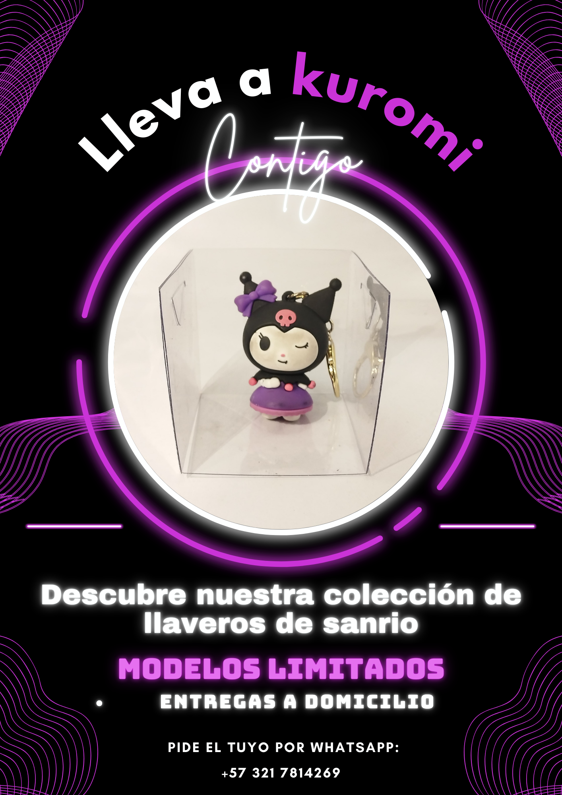

Trabajo 1
Este trabajo Es de Diseño 3D en el que se tenia que hacer un render de algo de gastronomia, Por mi parte hice un ramen, utilice tecnicas que no habia visto hasta el momento y por eso es uno de mis trabajos favoritos.

Trabajo 2
El flyer se hizo luego de una clase sobre las cajas de luz para fotos que desde las fotos que tomamos se hacia la publicidad, esa fue una foto que tome y gracias a los colores del objeto, en este caso un llavero de kuromi, me gusto el diseño del flyer.

Trabajo 3
Descripción breve del proyecto.

Trabajo 4
Trabajo.

Trabajo 5
TRabajo